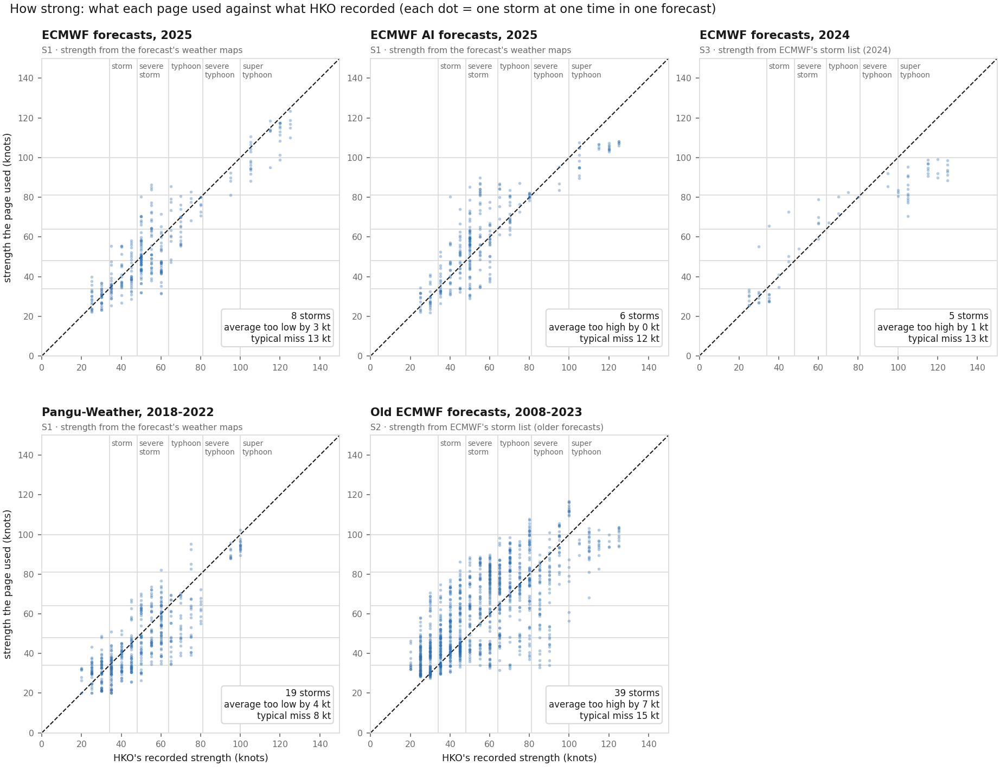
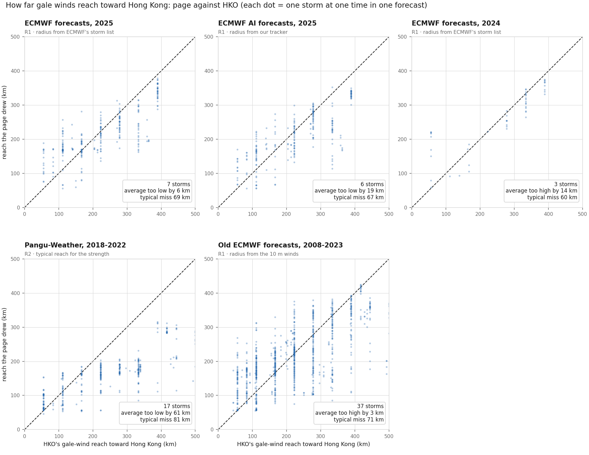
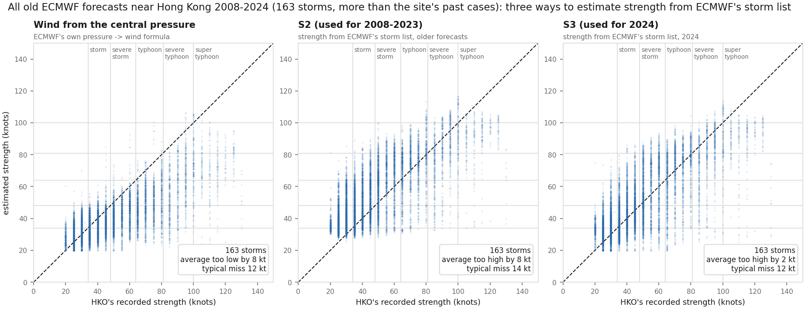
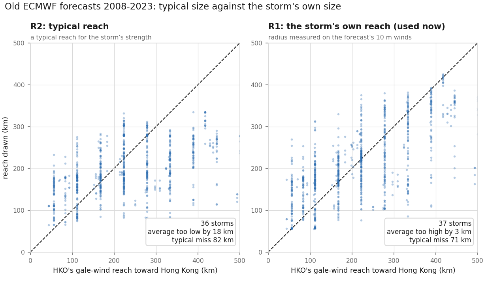

← back to the forecasts · Method · How good is it?
For each year of forecasts on this site: where the forecast comes from, how we estimate the storm's strength and how far its gale winds reach, and how close those estimates came to what the Hong Kong Observatory (HKO) recorded. State of 8 Oct 2026.
| Years | Forecasts from | How many on this site | Storm strength from | Gale-wind reach from | A fair test? (not used to set up the site) |
|---|---|---|---|---|---|
| 2008–2023 | ECMWF's ensemble of that time (old forecasts from the TIGGE archive; 50 versions + 1 control) | 119 (incl. Koinu 2023) | S2 · estimated from ECMWF's storm list (the storm's pressure and wind) — these old forecasts do not keep the weather maps S1 reads | R1 · the storm's own reach toward Hong Kong, radius measured on the forecast's winds 10 m above the sea, put on HKO's scale | no |
| 2018–2022 | Pangu-Weather (Huawei's AI weather model), one forecast per start time, re-run from ECMWF's reanalysis | 87 | S1 · from Pangu's weather maps | R2 · a typical reach for the storm's strength (one value for all directions) — R1 did worse here | no |
| 2024 | ECMWF ensemble (50 versions) | 7 | S1 on the main forecast; the 50 versions S3 · estimated from ECMWF's storm list (the free data of 2024 does not keep all the weather maps) | R1 · the storm's own reach toward Hong Kong, radius from ECMWF's storm list, put on HKO's scale | no |
| 2025 | ECMWF ensemble (50 versions) | 25 | S1 · from each version's weather maps | R1 · the storm's own reach toward Hong Kong, radius from ECMWF's storm list, put on HKO's scale | no |
| 2025 | ECMWF AI model (AIFS), 51 versions, storms found by our own tracker | 28 | S1 · from each version's weather maps | R1 · the storm's own reach toward Hong Kong, radius measured by our tracker in four directions, put on HKO's scale | no |
| 2026 | ECMWF ensemble (50 versions) | 21 | S1 · from each version's weather maps | R1 · the storm's own reach toward Hong Kong, radius from ECMWF's storm list, put on HKO's scale | yes |
| 2026 | ECMWF AI model (AIFS), 51 versions | 30 | S1 · from each version's weather maps | R1 · the storm's own reach toward Hong Kong, radius from ECMWF's storm list, put on HKO's scale | yes |
Every page also uses the same station model (which of HKO's 8 reference stations will see gale, storm or hurricane winds), and the same rule near the rings: when Hong Kong is inside a drawn ring, the chance of that signal cannot fall far below HKO's own record (about seven in ten hours inside the gale ring had No. 8). Since 7 Oct 2026 this minimum fades in over 50 km either side of the ring's edge instead of switching on at the edge. 2025 and 2026 were not used to set up the site, so those years are a fair test.

How to read it: each dot is one storm at one time in one forecast (the middle of all versions). Dots on the dashed line match HKO; dots above it are too strong, below it too weak. The grey lines mark HKO's classes. Numbers in the corner: how far off on average, and the typical miss.
| HKO class | ECMWF 2025 8 storms | ECMWF AI 2025 6 storms | ECMWF 2024 5 storms | Pangu 2018–22 19 storms | Old ECMWF 2008–23 39 storms |
|---|---|---|---|---|---|
| Tropical depression (up to 33 kt) | 7 kt too high misses by 10 kt · 4 storms | 5 kt too high misses by 10 kt · 3 storms | 10 kt too high misses by 11 kt · 3 storms | 6 kt too high misses by 7 kt · 15 storms | 18 kt too high misses by 18 kt · 31 storms |
| Tropical storm (34–47 kt) | 6 kt too high misses by 13 kt · 7 storms | 5 kt too high misses by 12 kt · 6 storms | 7 kt too high misses by 12 kt · 3 storms | 1 kt too low misses by 7 kt · 18 storms | 13 kt too high misses by 15 kt · 34 storms |
| Severe tropical storm (48–63 kt) | 1 kt too low misses by 16 kt · 7 storms | 2 kt too high misses by 15 kt · 6 storms | 8 kt too high misses by 12 kt · 3 storms | 6 kt too low misses by 12 kt · 11 storms | 7 kt too high misses by 16 kt · 24 storms |
| Typhoon (64–80 kt) | 6 kt too low misses by 14 kt · 4 storms | 0 kt about right misses by 13 kt · 3 storms | 2 kt too high misses by 10 kt · 3 storms | 14 kt too low misses by 18 kt · 8 storms | 1 kt too low misses by 14 kt · 22 storms |
| Severe typhoon (81–99 kt) | 8 kt too low misses by 13 kt · 1 storm | 12 kt too low misses by 16 kt · 1 storm | 7 kt too low misses by 8 kt · 1 storm | 5 kt too low misses by 5 kt · 1 storm | 13 kt too low misses by 16 kt · 9 storms |
| Super typhoon (100 kt and more) | 10 kt too low misses by 13 kt · 1 storm | 12 kt too low misses by 13 kt · 1 storm | 24 kt too low misses by 24 kt · 1 storm | 6 kt too low misses by 6 kt · 1 storm | 7 kt too low misses by 16 kt · 3 storms |
| All storms | 3 kt too low misses by 13 kt · 8 storms | 0 kt about right misses by 12 kt · 6 storms | 1 kt too high misses by 13 kt · 5 storms | 4 kt too low misses by 8 kt · 19 storms | 7 kt too high misses by 15 kt · 39 storms |
Each storm counts once (its own average first, then the average over storms). Lead times up to 5 days; the main (unperturbed) forecast left out. The sources cover different years and storms, so compare columns with care; classes with one storm are single cases. 2026 is not shown because HKO has not yet published its 2026 storm records.

How to read it: as above, for the gale-wind reach toward Hong Kong in km. HKO often records the reach in round steps (for example 56, 111, 167 and 222 km), so many dots line up in columns. All sources miss by roughly 60–80 km for a typical storm; Pangu's typical size is about 60 km too small on average.
Old ECMWF forecasts (2008–2024) do not keep the weather maps our strength estimate reads, so the strength has to be estimated from ECMWF's storm list. Three ways, checked on all 163 storms that came near Hong Kong (more storms than this site's past cases):

The wind worked out from the central pressure is close for weak storms but far too weak for typhoons (the right half of the first panel). S2 and S3 keep typhoons much closer to HKO.
Why S2 for 2008–2023 and S3 for 2024? Each is matched to its kind of forecast: the 2024 ensemble ran at 9 km, the old ones at about 50 km until 2010, 32 km until 2016 and 18 km until June 2023. On the old forecasts S3 makes typhoons about 6 kt too weak and, in a test fixed in advance on 28 old runs, did worse for No. 8 (score 0.256 against 0.192; lower is better), so each kind keeps its own. The choice follows the kind of forecast, not how any one storm turned out. Two caveats: it was made on these same past cases, so their numbers flatter S2 a little; and Saola and Koinu 2023, which came after ECMWF's switch to 9 km in June 2023, still use S2.

For the gale-wind reach, R1 (the storm's own reach, radius measured on the forecast's winds) beats R2 (a typical reach for the storm's strength): about 3 km too large on average instead of 18 km too small, and a typical miss of 71 km instead of 82 km. On these 112 old forecasts it also caught three more No. 8 storms (one more false No. 10).